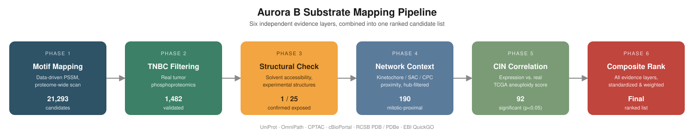
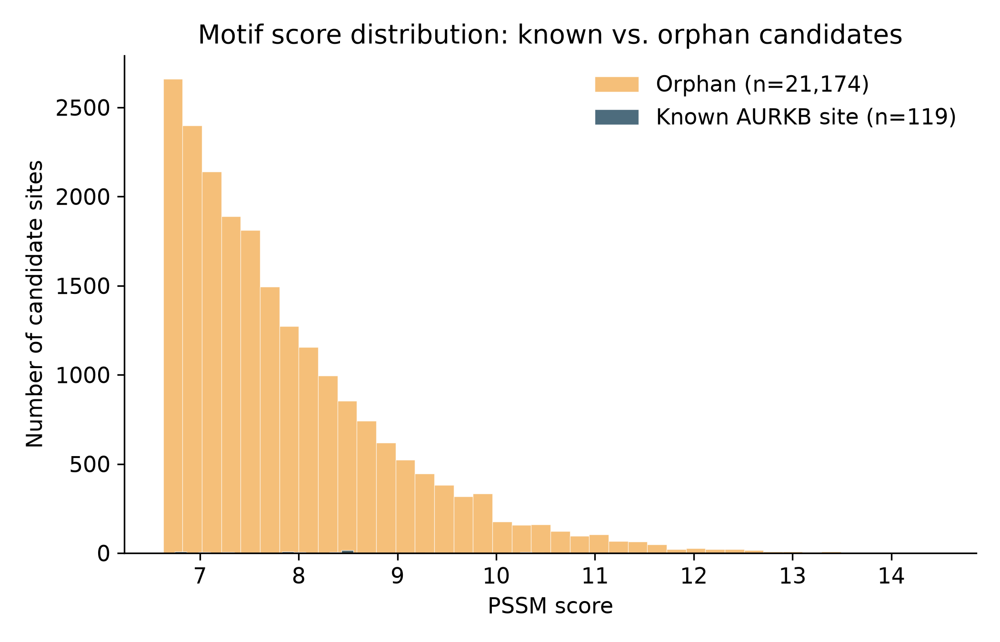
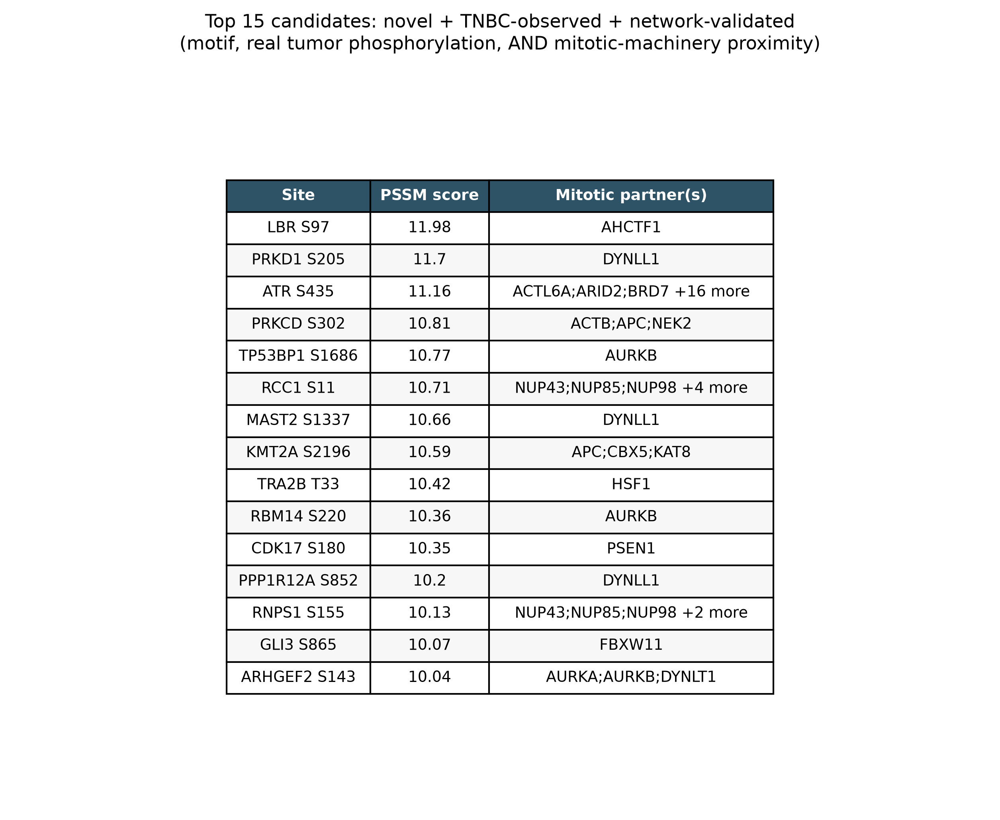

Overview
Chromosomes are gained, lost, and rearranged from one division to the next, a churn called chromosomal instability (CIN) and cancer’s relationship with that churn is stranger than “more is worse.”
CIN behaves like a dial, turn it too low and a tumor stays genetically uniform, an easier target for a single therapy. Turn it too high and a cell accumulates enough damage to die mid-division, mitotic catastrophe which is the same fate several Aurora B inhibitors are designed to force onto cancer cells deliberately.
Cancer’s actual advantage lives in the narrow band between the two, just enough genetic variation for natural selection to test, not so much that any one cell fails to survive the division that produced it. That is where drug resistance, metastasis, and relapse get manufactured.
Phosphorylation is one of the fastest levers a cell has for turning that dial.
A kinase like Aurora B tacks a phosphate group onto a specific serine or threonine on a target protein, and depending on where that residue sits, the protein can switch on, switch off, change shape, or lose its grip on whatever it was holding, in this case, often a chromosome. Aurora B sits right at the dial, regulating how chromosomes attach to and are pulled apart by the mitotic spindle.
Why Triple Negative Breast Cancer.
Triple-negative breast cancer (TNBC) is the subtype defined by what it lacks.
- Estrogen receptor,
- Progesterone receptor
- HER2 amplification
None of the three molecular handles that give other breast cancers a targeted drug. It accounts for roughly one in eight to one in seven breast cancer diagnoses, skews toward younger patients, and is diagnosed at roughly twice the rate in Black women compared with most other groups.
It also behaves more aggressively: TNBC is more likely to be caught at a later stage, more likely to recur, and its five-year survival drops sharply once the disease has spread. Without a receptor to target, chemotherapy remains the backbone of treatment for most patients, largely unchanged in decades.
Aurora B runs recurrently overactive in TNBC specifically. Aurora B inhibitors already exist and have shown real antineoplastic effect in breast cancer models, including TNBC, by pushing cells past the chaos dial’s upper limit into mitotic catastrophe on purpose, and combinations built around Aurora/angiogenic kinase inhibition have already reached phase II trials in previously treated, metastatic TNBC patients.
The drugs work. What’s still largely missing is the map of exactly which proteins Aurora B is modifying to drive the instability in the first place.
Data & methods
- Reviewed human proteome (UniProt/Swiss-Prot) — genome-wide sequence scan target.
- 281 curated Aurora B substrate sites (OmniPath enzyme-substrate resource) — training data for a position-specific scoring matrix (PSSM):essentially a per-position “which amino acids are actually tolerated here” profile, built from real confirmed sequence windows rather than a hand-guessed consensus motif.
- TNBC tumor phosphoproteomics (CPTAC, 122 patients, via the
cptacpackage and cBioPortal’sbrca_cptac_2020study) — real, tumor-level phosphorylation evidence. - Experimental structures (RCSB PDB / PDBe SIFTS) — solvent accessibility checks for top candidates.
- Gene Ontology + OmniPath interactions — reference set for kinetochore, spindle assembly checkpoint, and chromosomal passenger complex membership, used to test network proximity to known mitotic fidelity machinery.
- TCGA breast cancer cohort (~1,000 patients, cBioPortal
brca_tcga_pan_can_atlas_2018) — real chromosomal instability metrics (Aneuploidy Score, Fraction Genome Altered — both cohort-derived measures of how rearranged a tumor’s karyotype is) for cohort-scale correlation.
Six phases,
Build a PSSM from real known-site sequence windows: scan the full proteome and rank every Ser/Thr by motif fit.
Cross-reference candidates against real TNBC tumor phosphoproteomics — keep only sites actually detected as phosphorylated in patient tissue.
Check solvent accessibility of top candidates against experimental structures a phosphosite buried in a folded core isn’t reachable by a kinase without local unfolding.
Test direct interaction with core mitotic fidelity machinery (kinetochore / SAC / chromosomal passenger complex) explicitly excluding non-specific “hub” proteins (chaperones, cytoskeletal components, ubiquitin-pathway proteins) that show up as an interaction partner of almost everything in curated databases.
Correlate candidate gene expression against real genomic instability metrics across ~1,000 TCGA tumors.
Standardize and combine all evidence layers into one composite-ranked candidate list.

The full pipeline and code are open on GitHub for reproducibility — every threshold below is a documented, adjustable parameter in that codebase, not a hidden default.
Findings
The pipeline narrowed an initial pool of 21,293 proteome-wide motif matches down to a small, multi-evidence-backed shortlist.
1,482 candidates are actually observed phosphorylated in real TNBC tumor tissue, confirmed in patients.
190 candidates sit in the direct interaction neighborhood of core kinetochore, spindle-checkpoint, or chromosomal passenger complex machinery, after explicitly filtering out non-specific hub proteins.
92 candidate genes show a statistically significant correlation between expression and real tumor chromosomal instability across the TCGA cohort.
One candidate, RGL2 S736, was independently confirmed surface exposed against an experimental structure.
RGL2
a guanine nucleotide exchange factor that activates the small GTPase RalB downstream of Ras signaling. If Aurora B really is modifying RGL2 during mitosis, that’s a candidate link between the chromosome-segregation machinery and a completely separate oncogenic signaling axis.
Two other hits function as an accidental control on the entire pipeline: NDC80 S55 and KNL1 S1675.
NDC80
The core microtubule-binding subunit that physically couples kinetochores to the spindle and generates the force that actually moves chromosomes apart, its N-terminal tail is already known to carry Aurora-B-regulated phosphosites that loosen incorrect attachments so the cell gets a second try before committing to division.
KNL1
The scaffold that recruits the spindle assembly checkpoint, the surveillance system that holds the cell in mitosis until every chromosome is properly attached. Both are textbook, load-bearing components of the exact error-correction machinery this whole project is about — and both were re-discovered independently, with neither hard-coded anywhere in the filters. When a method built purely from motif scores, real tumor data, and network statistics lands back on residues already known to matter to chromosome segregation, that’s a strong sign it’s capturing something real.


Every threshold and weighting choice in the pipeline is documented and adjustable in the code.
Notes
Howard, F. et al. “Epidemiology of Triple-Negative Breast Cancer: A Review” — Cancer Journal. TNBC incidence and survival gap vs. hormone-receptor-positive disease.
American Cancer Society, “Triple-negative Breast Cancer” — receptor status, staging, and general prognosis. Fred Hutch, “Current landscape of metastatic triple-negative breast cancer survival rates” — demographic skew (age, race) and metastatic risk window.
Krenn, V. & Musacchio, A. “The Aurora B Kinase in Chromosome Bi-Orientation and Spindle Checkpoint Signaling” — Frontiers in Cell and Developmental Biology. General review of Aurora B’s role at kinetochores.
Zaytsev, A. et al. “Aurora B kinase is recruited to multiple discrete kinetochore and centromere regions” — Journal of Cell Biology. Hec1/NDC80 as an Aurora B substrate and the biology behind its N-terminal tail phosphosites.
GeneCards, “RGL2 Gene” — quick-reference on domain structure and pathway membership.
Neel, N. et al. “Localization of RalB signaling at endomembrane compartments and its modulation by autophagy” — Scientific Reports. RGL2 as a RalB activator, invasion and autophagy context.
Yang, J. et al. “Antineoplastic effects of an Aurora B kinase inhibitor in breast cancer” — Molecular Cancer. Barasertib (AZD1152) mechanism and preclinical breast cancer data.
Diamond, J. et al. “A phase II clinical trial of the Aurora and angiogenic kinase inhibitor ENMD-2076 for previously treated, advanced, or metastatic triple-negative breast cancer” — Breast Cancer Research.